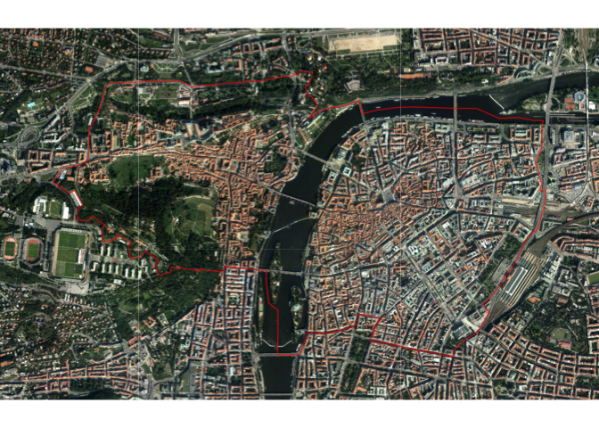
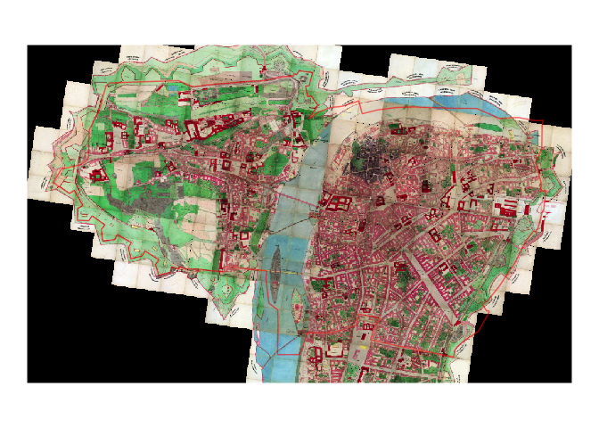

📦 pragr aims to provide tools for visualising data about Prague. Currently, it makes Prague raster geodata accessible for use in R via 📦 ggplot2.
What it does
Currently, the 📦 enables you to do two things:
- Add raster tiles from the Prague geoopen data portal to a
ggplot2object (prg_tile()) - Add other raster layer to a
ggplot2object (prg_basemap())
The basic logic of these two functions is that given a simple feature dataset, they provide the tiles or image to create the base map for those coordinates.
It relies on the REST API of ArcGis map/image services that power the geoportal, using documentation for the following operations (endpoints):
The approach draws heavily on code provided by @yutannihilation in his blog post on using OpenStreetMap tiles in 📦 ggplot2.
The approach should be generalisable to other ArcGis-driven servers with the same REST API, though the package as it now is assumes a projected CRS measured in meters, specifically the Krovak crs (EPSG 5514).
Usage
library(pragr)
library(dplyr)
#>
#> Attaching package: 'dplyr'
#> The following objects are masked from 'package:stats':
#>
#> filter, lag
#> The following objects are masked from 'package:base':
#>
#> intersect, setdiff, setequal, union
library(sf)
#> Linking to GEOS 3.5.1, GDAL 2.2.2, PROJ 4.9.2
library(ggplot2)praha1 <- CzechData::load_RUIAN_settlement(prg_kod, "MOMC_P", WGS84 = F) %>%
filter(nazev == 'Praha 1')ggplot() +
prg_tile(data = praha1, zoom = 10, alpha = .7, buffer = 200,
tile_service = 'orto') +
geom_sf(data = praha1, fill = alpha("red", 0.6), colour = NA) +
theme_void()
ggplot() +
prg_basemap(data = praha1, alpha = .8, buffer = 200,
image_service = 'mapy_archiv', layer = 6) +
geom_sf(data = praha1, fill = alpha("red", 0.6), colour = NA) +
theme_void()
What’s in a name?
The name of the package refers to Karel Prager, a renowned Czech modernist architect. Among other things, he designed - and for a long time worked in - the office buildings in which the Institute for Planning and Development, Prague’s public urban planning body, is housed today.
The institute’s excellent data team develops and maintains the data and software infrastructure for Prague’s geographical data on which this package - and much of Prague’s planning, government and business - relies.
Prag is of course how the city was once called by its many German-speaking inhabitants.
Data sources:
Most map/image services are accessible via http://www.geoportalpraha.cz/cs/clanek/22/mapove-sluzby
A more technical route to lists of services is via
- https://mpp.praha.eu/arcgis/rest/services/
- https://tiles.arcgis.com/tiles/SBTXIEUGWbqzUecw/arcgis/rest/services
- http://mpp.iprpraha.cz/arcgis/rest/services/
For some of the services, shortcut notation is implemented for use in the tile/basemap functions.
Acknowledgments
- Most importantly, IPR Praha for providing the open data !
- The approach draws heavily on code provided by @yutannihilation in her [blog post]
- logo designed using the 📦 bunny by @dmi3kno following his blog post
- font in logo is Trivia Serif by František Štorm